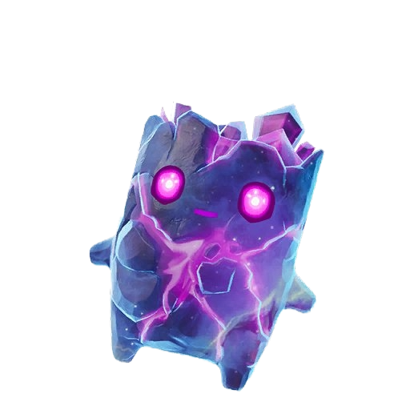
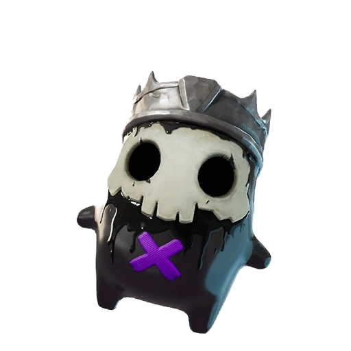
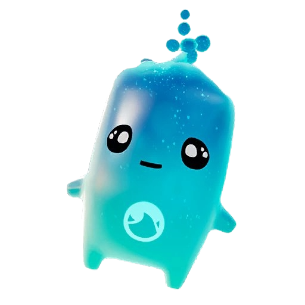
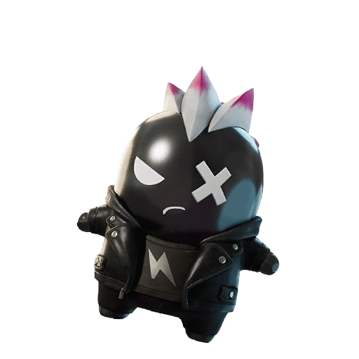
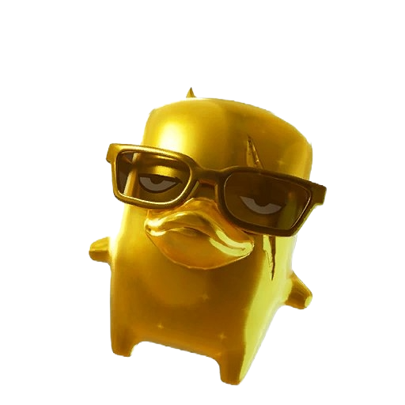
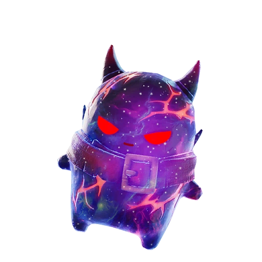
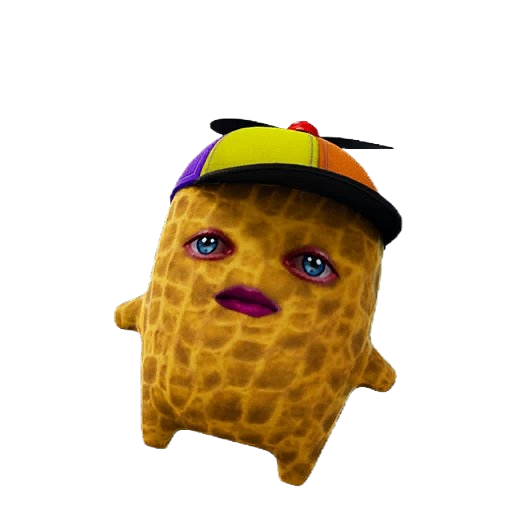

A custom Discord bot that runs your sprite-trading economy — trust & vouches, safe two-party trades, full collection tracking, and trade matchmaking. Free to run. Built for your server.







Five things, all inside Discord. Members keep using the server normally — the bot handles trust, trades, and collections in the background.
After a good trade, members vouch for each other. Vouches build trust and automatically promote traders up flair ranks. Earns the verified-trader role automatically.
/vouch+rep/profile/rank/leaderboardA trade only counts when both people press Confirm — so nobody gets scammed on the drop. Then it prompts both to vouch. Everything is logged.
/tradeMembers track all 41 sprites on a companion web page, then sync it into Discord with one code. The bot makes shareable collection and "looking for" images automatically.
/synccollection/mycollection/missing/spritesetThe bot knows who has what, so it can instantly find trade partners and show server-wide progress and the most-wanted sprites.
/holders/spritematch/spriteinfo/guildprogressFor rare sprites (Zero Point, John Wick…): a distributor gives them out one at a time in a fair line. Members click Join on a live board — the bot tracks positions and pings whoever's next. Open only the queues you want.
/queue open/queue next/queue doneReport scammers to a private mod channel, blacklist bad actors (it strips their trust roles), and stop alt-account farming with account-age, server-tenure, and cooldown checks.
/reportscammer/blacklistWelcomes new members, keeps the sprite-holder lists current, posts a daily leaderboard, an optional weekly digest, and announces brand-new sprites when Epic adds them.
/digest/whohas/whoneedswelcome/panel.About 30 minutes, no coding. You'll create the bot, invite it, host it, and run one setup command. Anyone you trust with a computer can follow this.
Go to the Discord Developer Portal → New Application → name it "Sprite Trade Stop". Then open Bot in the left menu → Add Bot.
Still on the Bot page, scroll to Privileged Gateway Intents and turn ON:
+rep shortcut and analytics workClick Save Changes.
On the Bot page click Reset Token → Copy. This is the bot's password — keep it private, you'll paste it once during hosting (Step 5).
Open OAuth2 → URL Generator. Tick bot and applications.commands. Then under permissions tick: Manage Roles, Send Messages, Embed Links, Attach Files, Read Message History, Add Reactions. Copy the link at the bottom, open it, and add the bot to Sprite Trade Stop.
The bot is a small program that needs to stay running. Pick one — the full click-by-click guide is in HOSTING.md:
Best free option. A real always-on server. Most setup, fully free.
Easiest. Upload the folder, paste the token in a web panel. No Linux.
Most reliable, set-and-forget. A small paid server.
During hosting you'll paste the token from Step 3 into a file called .env (or a token box in the panel).
In Discord, type /setup. The bot automatically finds your channels (trade-portal, vouch-trades, modlog, leaderboard, welcome, news, …) and your sprite/Gold/flair/verified roles by name, and saves them. It tells you if anything's missing so you can create it and run /setup again.
/setup does the wiring. Optionally turn on the weekly recap with /digest on./synccollection, /trade, and /vouch right away.Members mark which sprites they have on a fast, no-login web page, filter by Normal / Gold / Gummy / Galaxy, and export a shareable image. One button copies a sync code they paste into /synccollection — and the bot takes over from there.
Hosted on GitHub Pages. Nothing to install for members — they just open the link.
The website and the bot share the exact same sprite list, so a synced code always matches perfectly.
Python + a small local file. No paid APIs, no subscriptions. Free hosting works fine.
Locked to your one server. The bot can't be pulled into someone else's server to leak your data.
Two-party confirms, account-age + tenure checks, cooldowns, vouch caps, and a blacklist that removes trust roles.
Full source on GitHub, automated tests, and a complete handoff guide so any helper can maintain it.
Sprite Trade Stop Bot · made for the community · sprite art © Epic Games (fan project)
Questions? Everything — setup, commands, and how it works — is in the GitHub README and ARCHITECTURE guide.